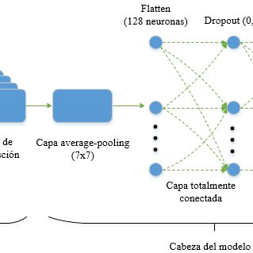
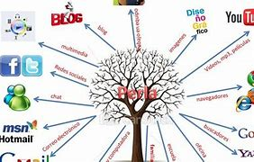

DISEÑANDO EL PRESENTE Y EL FUTURO: INTELIGENCIA ARTIFICIAL PARA EL DESARROLLO SOSTENIBLE
La Carrera de Ingeniería de Sistemas organiza y presenta el VI Congreso Internacional de Ingeniería de Sistemas “Diseñando el presente y el futuro: inteligencia artificial para el desarrollo sostenible”. Este congreso busca la reflexión, discusión y presentación de trabajos basados en inteligencia artificial, orientados a favorecer el desarrollo sostenible. Se espera que las investigaciones aborden estos fenómenos desde las áreas de sistemas de información, ingeniería de software, ciencias de la computación y tecnologías de la información.
Horario de talleres
Big Data de 10:00 a 11:00 am
Metodologías de Desarrollo de Software de 11:00 a 12:00 am
E-Business de 12:00 a 1:00 pm
Sistemas Embebidos de 1:00 a 2:00 pm
Gestión de Proyectos de Sistemas de Información de 2:00 a 3:00
Ponencias
red neuronal convolucional profunda apilada para predecir la vida útil restante de un motor turbofán

Construir capas y redes de conocimiento a partir de la información digital urbana

Los sistemas P como marco de modelización de la biología molecular de sistemas